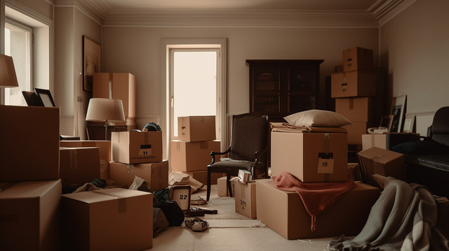
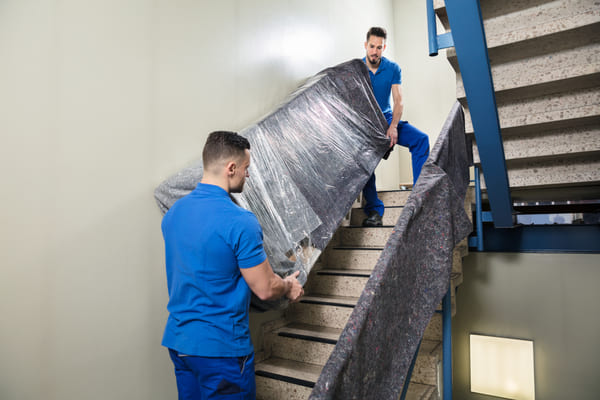
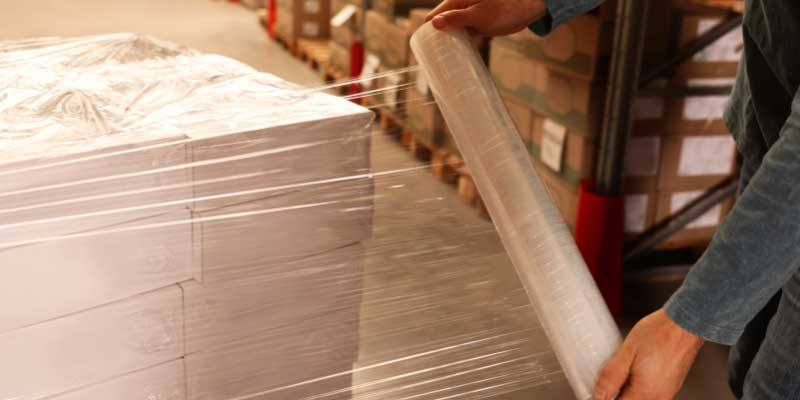
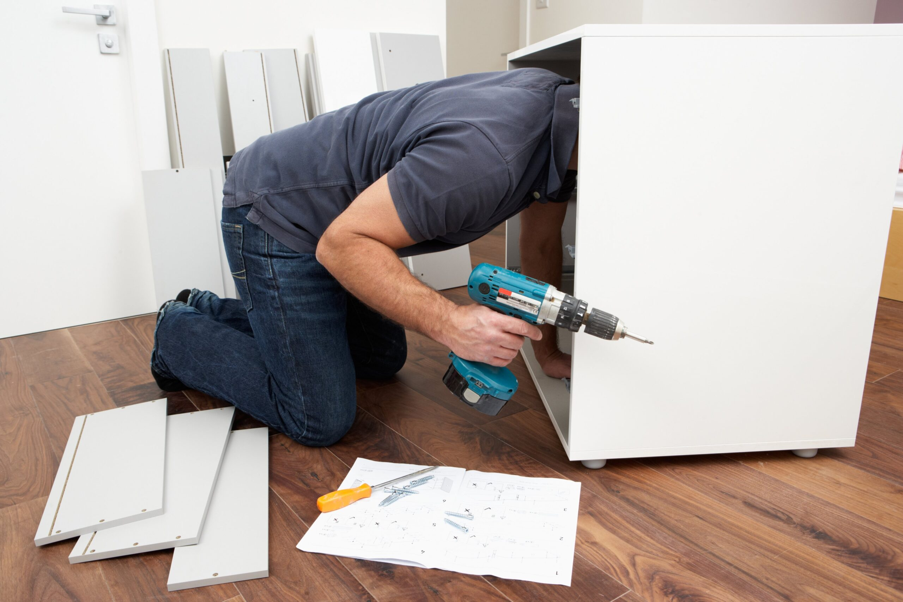
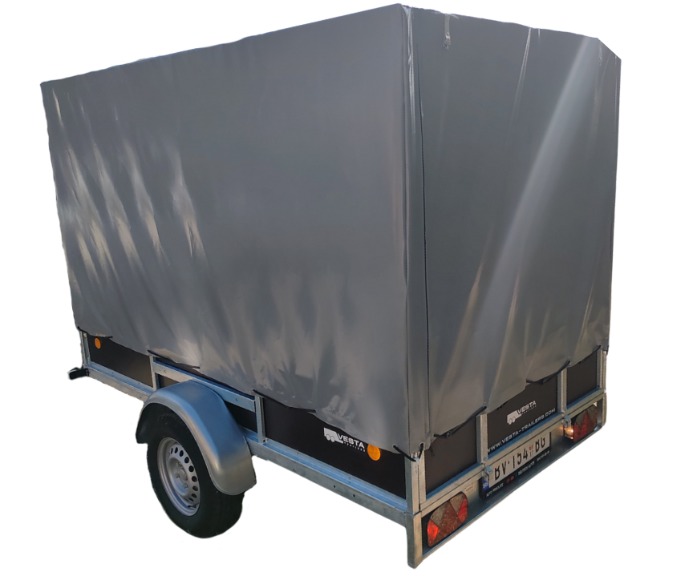
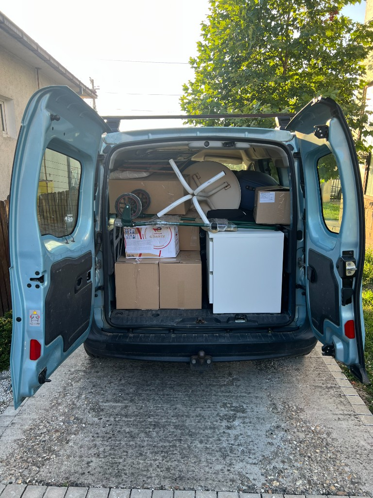
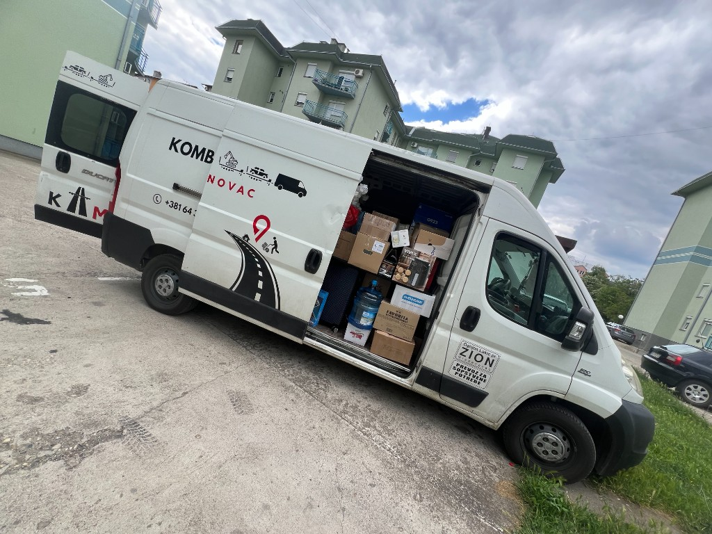
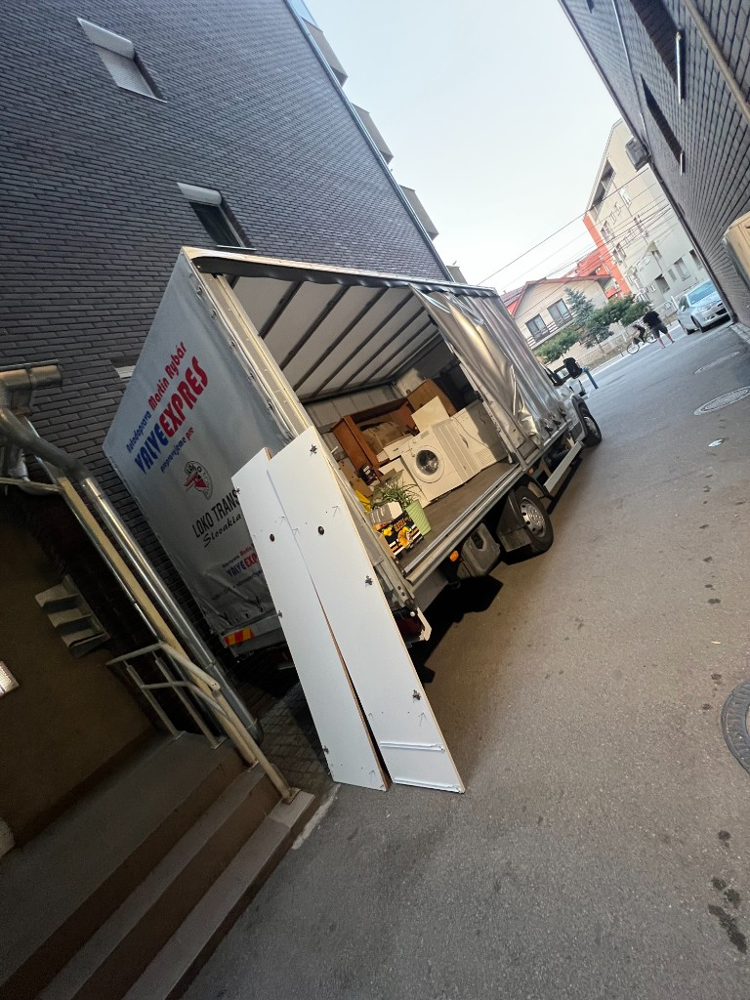
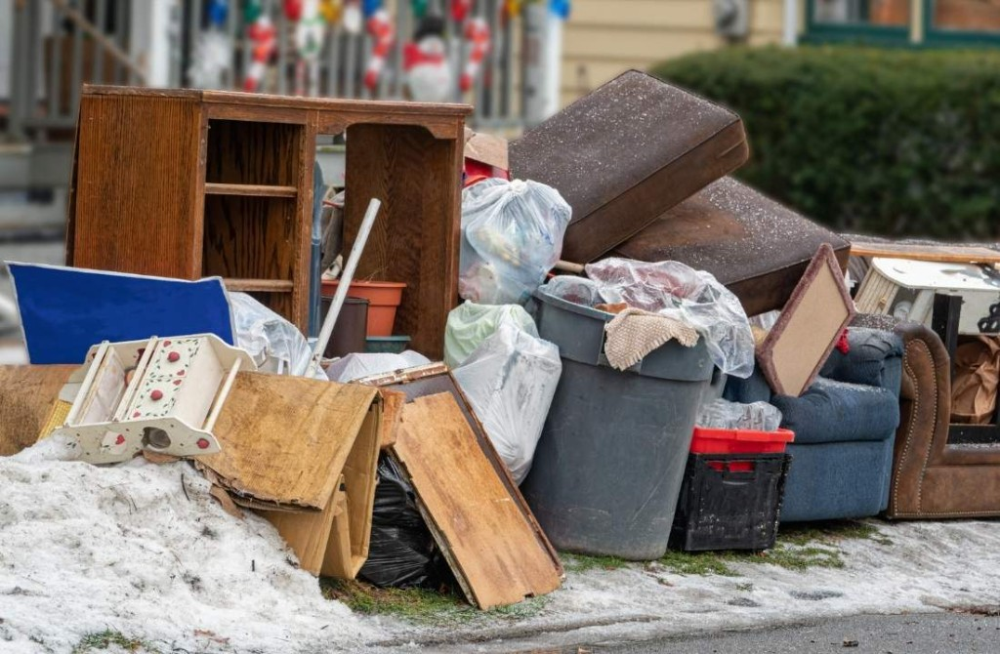

Selidbe stanova
Premještanje nameštaja, kutija i ličnih stvari iz jednog stana u drugi. Uključuje planiranje, pakovanje, transport i raspoređivanje. Timska pomoć čini prelazak bržim i lakšim.
KTM usluge
Od pikapa do kamiončeta, od pakovanja do odvoza na deponiju. Recite šta selite — mi predložimo najjeftinije vozilo koje stane.

Premještanje nameštaja, kutija i ličnih stvari iz jednog stana u drugi. Uključuje planiranje, pakovanje, transport i raspoređivanje. Timska pomoć čini prelazak bržim i lakšim.
Premještanje nameštaja, opreme i dokumentacije iz jednog poslovnog prostora u drugi. Pažljivo planiranje i timska podrška da prekid poslovanja bude što manji.

Obučeni ljudi za pakovanje, nošenje, utovar i raspoređivanje. Iskusni radnici smanjuju rizik od povreda i oštećenja. Koordinacija i timski rad su ključ uspešnog prelaska.

Pažljivo pakovanje uz streč foliju i kartonske kutije. Ovi koraci sprečavaju oštećenja tokom transporta i čuvaju nameštaj i lične predmete.

Rastavljanje i sastavljanje nameštaja, opreme i aparata. Lakši transport, manji rizik od oštećenja, ušteda vremena i truda.

Ako povremeno trebate dodatni prostor i želite sami da vozite. Sve prikolice su nove, rezervacija u terminu koji vama odgovara. Detalji i mere →

Najjeftinija varijanta kad ne treba kombi. Pikap je dovoljan za manji teret, par kutija, belu tehniku ili stvari koje stanu u manje vozilo. Vi plaćate manje, a stvari stižu isto bezbedno.

Srednje vozilo za većinu selidbi i prevoza. Kombi stane više od pikapa, a kad teret nije za kamionče — ovo je prava mera. Kutije, nameštaj, bela tehnika i stvari iz stana.

Zahvaljujući znatno većem kapacitetu u odnosu na standardni kombi, u kamionče staje i do 3 puta više stvari. Idealno za veće selidbe, nameštaj, belu tehniku, građevinski materijal i kabastu robu. Često je dovoljan samo jedan dolazak.

Pražnjenje podruma i stanova: uklanjanje i odvoz nepotrebnih stvari na deponiju. Stari kauč, polupani prozori, dušeci, bela tehnika i kabasti otpad — sortiranje, utovar i bezbedan transport.
Za lokalni kombi prevoz u Mladenovcu orijentaciono 3.000–6.000 din, kompleksnije selidbe 8.000–12.000 din. Tačnu cifru dogovorimo kad znamo šta selite.